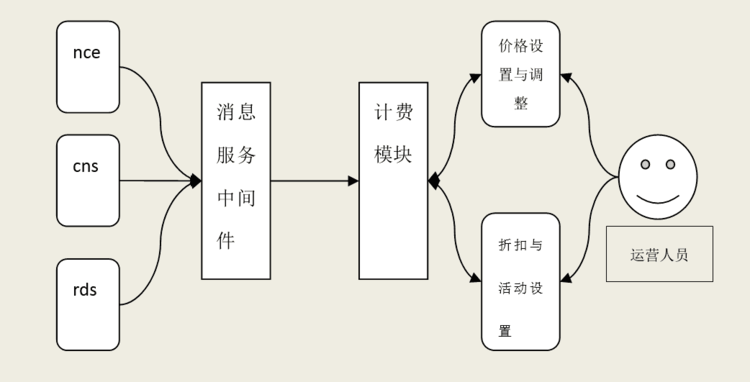
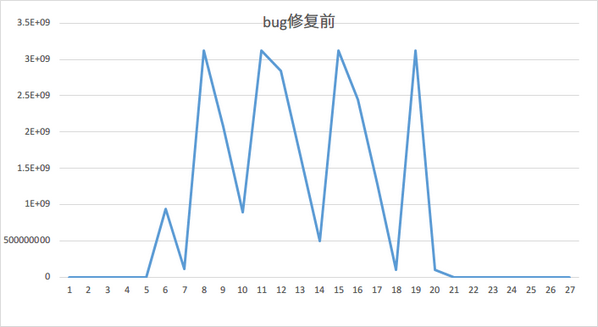
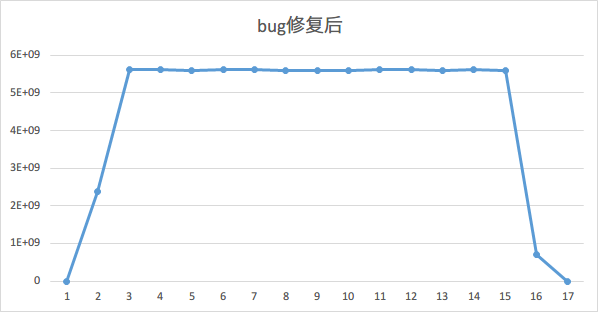

一个Bug带来的若干思考
Contents
不久之前(现在距离写下此文已经很久了)，对蜂巢计费进行测试的时候发现了一个Bug，定位解决的过程费了不少周折，所以记录一下，和大家分享。
背景
首先说一下这个Bug的背景，我们的蜂巢计费系统。
蜂巢 是网易新出的一个基于SSD的Docker服务。其基本实现是在网易自己的云计算平台上部署Docker容器，然后对外售卖这个服务。在这里，IaaS层对用户来说是透明的，用户不需要关心Docker到底跑在哪个云主机上。
我们的计费系统构成主要分为三部分：
- 底层输出各自用量日志；
- 计费系统抓取日志，根据消息服务中间件进行日志汇总；
- 计费模块根据租户实例用量信息，进行费用结算。 最后以 RESTful API的形式提供给前端显示。
大概类似下图1： 
Bug的发现
蜂巢在创建容器的时候可以选择套餐或者非套餐。套餐的话最小容量一个月 29 块钱，包含 25G 流量，再赠送 25G 的流量。我要测试一下，套餐超出50G流量之后，是否按照 0.79 元 1G 进行扣费。
这个说来简单，找一台云主机，启动一个iperf作服务端，然后在套餐的容器里开一个iperf客户端，跑上一段时间就能把流量耗完了。为了测试快一点，我把带宽设置的大一点，400Mb每秒。
这时候问题来了，首先是我按照设置的速度消耗流量，到了预期时间流量没消耗完。继续跑iperf，流量消耗完了之后开始扣钱，发现30G左右的流量只扣大约20G左右的钱，相当于流量单价打了个6.7折。
作为用户肯定开心呀。但是作为公司这么赔钱做买卖可不行。那我们就要找问题。
很显然，curl一下接口，和前端显示的一致，说明不是前端的问题。那可能是计费模块的问题。
于是找计费的同学核对了好几次。直接在数据库里查这个租户，当前容器的流量统计日志，根据流量计算的就是这么点钱，没错。既然结算这里没有问题，那么看数据对不对，检查容器的流量日志，数据加起来就消耗了 20G。
难道是数据推送模块 ceilometer 的问题？ ceilometer 从 cns 那里取流量信息，打日志，计费模块的agent根据日志推送到计费的数据库进行计算。ceilometer 开发同学对我说，他是大自然数据的搬运工，不产生数据，只搬运数据，不可能错的。
这倒也是，其实偷偷说一句，这个模块当初我测试过，的确是没有发现Bug。怎么会每次推送都少了点呢？
这个时候其实我们还考虑过其他可能，例如丢包问题，比如你以为iperf的速率为 400Mb，但是实际只有 200Mb，丢了 50% 的包，但是这个也被排除了，因为最后看跑了多少流量同时看server端和client端两边的结果，是一致的。还有曾经怀疑过iperf的流量统计到底是否准确，如果它给出的统计结果本身就是不准确的呢？后来这个也被排除了，通过登录到云主机和容器，看两边网卡的ifconfig的统计值在测试前后做差得到的结果，是和iperf的统计值一致的。
这就怪了，用了30G的流量，但是只扣了20G的钱。
Bug的解决
直接剧透说结果吧。
这是底层 Open vSwitch 2.30 版本的一个Bug，某一个统计接口用了一个 32 位的变量。而 CNS 推送给 ceilometer 的数据就是通过ovs-dpctl -t 10 -s show获取的，因此每次推送流量如果大于4G，就会产生溢出。
既然是这个 32 位的问题，那么要解决还是比较容易的，换成 64 位的就可以了。但是直接要对 Open vSwitch 动刀还是有点风险，所以就换一条路，从物理机/proc/networks/dev这个地方去读取数值。
经过验证，流量统计准确了。
Bonus Tips
发现Bug是一回事，定位Bug的原因是另一回事。在此也送上一些Tips。
感谢 知乎的这个问答，我从这里学到不少思想。
放大现象
如果有些Bug现象不太明显，那么就想办法增大它的破坏性，把现象放大。
在美剧《豪斯医生》中有一集，医生怀疑病人心肺有问题，就让病人去跑步机上跑步，加重心肺负担，从而放大症状。
比如这个Bug当中，我们发现在带宽较大的情况下，流量丢失的就越明显。而在带宽较小的情况下，则不是那么明显。事后知道原因是因为 32 位溢出了之后很好解释，但是在不知道原因的时候，的确是很奇怪的。而且因为线上网络和 port qos 限速的原因，带宽的最大值有一个限制（400-500Mb），再往上就大不上去了。后来可以看到开发是直接在测试环境物理机上进行试验，才往这个方面去考虑。
通过这个案例，也提醒我们，以后测试的时候可以考虑 32 位这个限制，和 4GB 相关的数值要敏感。说不定就会发现一个溢出的Bug。
注意 Diff 和 Grep
这个技巧学来的时候，我都还不会用命令行下的工具:)不过就是初中那会儿的控制变量法嘛。不过后来在一个Blog里，有了更深的体会，虽然他在讲政治经济学，但我看到的是怎么Debug。
就是在这篇 《六中全会公报的红楼梦研究》 （被墙了ค(TㅅT)）文章中，作者详细说明了如何使用 Grep 和 Diff 进行研究公报。他的结论能够让我们提早知道为啥下一个五年计划工作重心放在了反腐倡廉上。我强烈建议大家读一读，搞不好用在投资领域，可能就要少调十年Bug了。:)
回到Bug上来，在调试和定位问题的时候，我们也能够利用 Diff 的思想，分别实验。这个Bug在公有云环境上有，在公共测试环境没有，那么就找找两个环境有什么区别。如果唯一区别是 Open vSwitch 版本不一致，那么很有可能是因为 Open vSwitch 的引起的Bug。那么就可以缩小范围，从Open vSwitch上找原因。
当变得东西多了，该法演变为二分定位法。
关键就是就是不断迭代缩小范围，最终定位问题的症结所在 。
具体手段包括但不限于：注释掉部分代码、在不同位置插入试探性代码、对输入数据二分、对代码版本二分、对运行环境二分。
只要是能复现的Bug，二分肯定能找到问题所在，要是有啥妙招那也可以用用，不过貌似没有妙招的时候多一点。 如果复现的方式比较复杂，耗时很长，那可能要专门写些程序或脚本来自动做二分。
Git甚至特地加上了一个git bisect的子命令，专门用来在各个 Commit 之间进行二分搜索，其主要目的，也就是在找不同。
比如 Intel 开源中心做内核开发的就是 这么 用程序来找Bug。
这套测试工具特别擅长抓Regression Bug。基于 Git 里面的 bisect 命令，测试系统通过二分法定位各种Regression Bug。比如 3.13 内核没问题，到 3.14 出问题了，这两个版本之间有上万个 Commit，如果不知道是哪个 Commit 造成这个问题，连该找谁修复都是问题。这种漫无目的的Debug要求开发者非常专业，必须对内核各个方面都非常了解，才能感知和分析哪里出了问题。但用 bisect，相当于把计算机变成一个内核专家。bisect 可以迅速定位问题，找出有问题的 Commit，自动给作者和维护者发邮件。他们是该Bug最相关的人，往往第一眼就看出问题出在哪里，并了解如何修复最为妥善。
借助图表
有一些Bug直接看数字很难体现，或者数字位数大了，人眼就不敏感。这个时候就应该祭出画图大法，将数字转化为图形。
本科的时候学习控制理论，这其中就有一种思想是将超调、纯滞后等特性在图像上进行反映。工厂有经验的老师傅们，进行参数整定与优化的过程中，都是看着输出曲线，加以调整。
一个系统有监控的时候，经常能够可以一眼看出有啥问题，没有监控的时候，就要翻日志来看了。借助Gnuplot或者 Excel，都能形象化看出一些变化。比如在客户端和服务端iperf以400Mb的带宽进行通信的15分钟里，有一段时间，流量瞬间小了下去。

而在Bug修复后以 800Mb 速率进行 15 分钟左右的测试，可以看到，流量还是相对比较平稳，哪个有问题，一眼可以看出来。

他山之石
还有一招，就是问人啦。或者 Google，StackOverflow，或者求教身边的大牛。
很多情况下，有经验的程序员可以一眼看出很多问题，比如野指针，传入参数为null，连接池未关闭等等。
尾声
但愿世间人物病，何妨架上药生尘。 但愿世间无Bug，何妨我术为屠龙。
然而世事不总遂人愿，因此学学调试技巧——一种让一个系统按照我们期望的方式运行的方法，还是很有意义的。君不见，生财之法，回春之术，经世之学，治国之道，无不都在 Debug！
更多阅读
最难调试修复的 bug 是怎样的？
你碰到过的最难调试的 Bug 是什么样的？
What’s the hardest bug you’ve debugged?
Author smasterfree
LastMod 2016-02-10